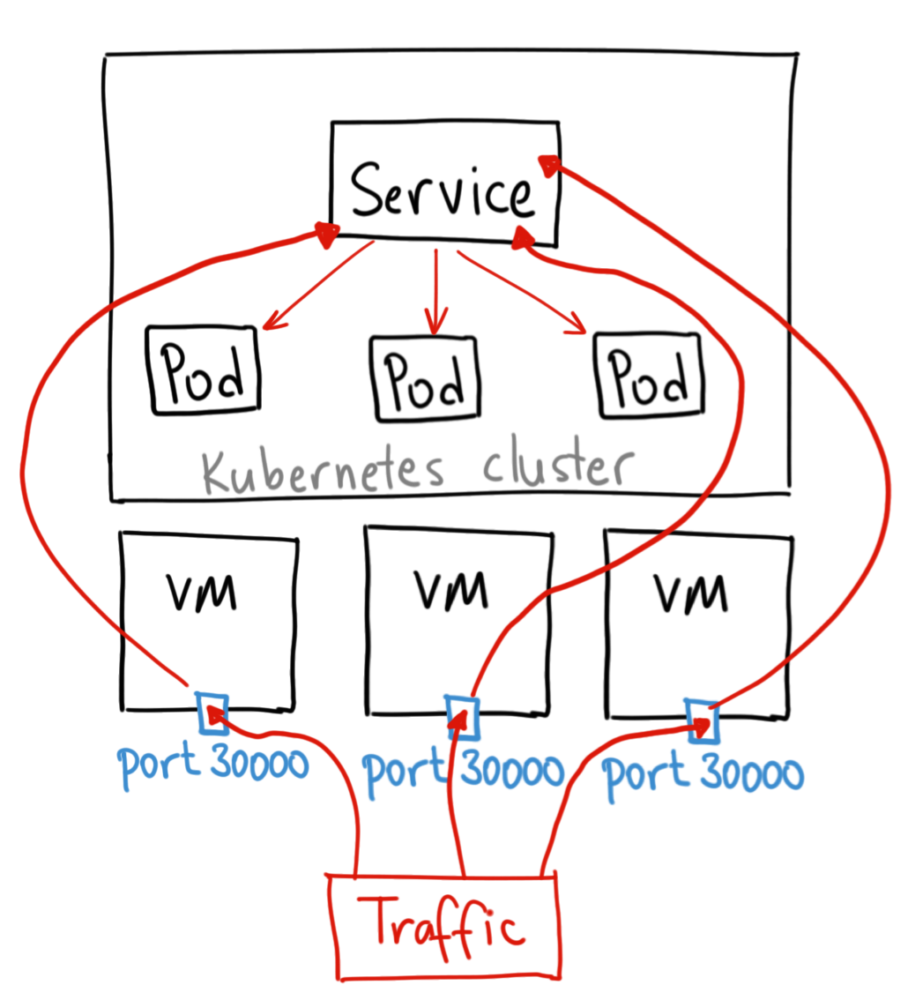

by TL
*YMMV
What's what in Kubernetes
What are the pieces and how they connect
What orchestrates
What is orechestrated
What are apps
Where are my containers
How to access my app
Where to persist data
How to
How to keep yours
Why not do it on k8s
Basic architecture
Client flow
The brain of kubernetes
Most of orchestration is done here.
Without it deployments don't work.
Does both scheduling and communication
Has maaaany components
Work horse of kubernetes
Everything that users see run here
Can be scaled to really sick numbers (~2k nodes max as of 1.14)
Continues to run when masters die
Configured via YAML
Complete set of elements to run app
Can be scaled on multiple levels
#yaml
apiVersion: apps/v1
kind: Deployment
metadata:
name: front-prod
namespace: "${NAMESPACE}"
labels:
app: "front-${APP_ENV}"
spec:
selector:
matchLabels:
app: "front-${APP_ENV}"
replicas: 4
strategy:
type: RollingUpdate
rollingUpdate:
maxSurge: 1
maxUnavailable: 25%
template:
metadata:
labels:
app: "front-${APP_ENV}"
spec:
imagePullSecrets:
- name: regcred
containers:
- image: "bpp/front:${BUILD_NUMBER}"
imagePullPolicy: Always
name: "front-${APP_ENV}"
env:
- name: APP_ENV
value: "${APP_ENV}"
livenessProbe:
httpGet:
path: /app/status
port: 4000
initialDelaySeconds: 60
periodSeconds: 5
readinessProbe:
httpGet:
path: /app/status
port: 4000
initialDelaySeconds: 60
periodSeconds: 5
One or more containers with shared storage/network
Logical "whole"
See each other via localhost and share port space
F.e. nginx + php-fpm in split containers
Used to access deployment
Has different types
We use nodeport as we're lazy
#yaml
apiVersion: v1
kind: Service
metadata:
name: "front-${APP_ENV}"
spec:
selector:
app: "front-${APP_ENV}"
type: NodePort
ports:
- name: http
port: 8000
nodePort: 31000
protocol: TCP
It's complicated
There are multiple providers
Hard to do it yourself
#yaml
apiVersion: v1
kind: Endpoints
metadata:
name: glusterfs
namespace: dev
subsets:
- addresses:
- ip: 10.10.10.11
- ip: 10.10.10.12
- ip: 10.10.10.21
ports:
- port: 1
protocol: TCP
---
apiVersion: v1
kind: PersistentVolume
metadata:
name: glusterfs
namespace: dev
spec:
accessModes:
- ReadWriteMany
capacity:
storage: 500Gi
glusterfs:
endpoints: glusterfs
path: gluster
persistentVolumeReclaimPolicy: Retain
volumeMode: Filesystem
#yaml
apiVersion: v1
kind: PersistentVolumeClaim
metadata:
name: postgres-pv-claim
namespace: dev
spec:
accessModes:
- ReadWriteMany
resources:
requests:
storage: 500Gi
As easy as kubectl apply -f my.yaml
It's done automagically using your recipe
Almost without issues ;)
Used to deliver secret configs to pods
Normally it's encoded not encrypted
Useful but PITA to use properly
Advanced example
#yaml
apiVersion: v1
kind: Secret
metadata:
name: auth-token-secret
type: Opaque
data:
AUTH_TOKEN_VALUE: eHh4LXh4eC14eHg=
Secrets as envs
#yaml
env:
- name: auth-token-secret
valueFrom:
secretKeyRef:
name: mysecret
key: tomcat-pass
Specific resource type is used cronjobs.batch
One resource per job == inefficient
Format is similar to crontab
Example
#yaml
apiVersion: batch/v1beta1
kind: CronJob
metadata:
name: hello
spec:
schedule: "*/1 * * * *"
jobTemplate:
spec:
template:
spec:
containers:
- name: hello
image: busybox
args:
- /bin/sh
- -c
- date; echo Hello from the Kubernetes cluster
restartPolicy: OnFailure